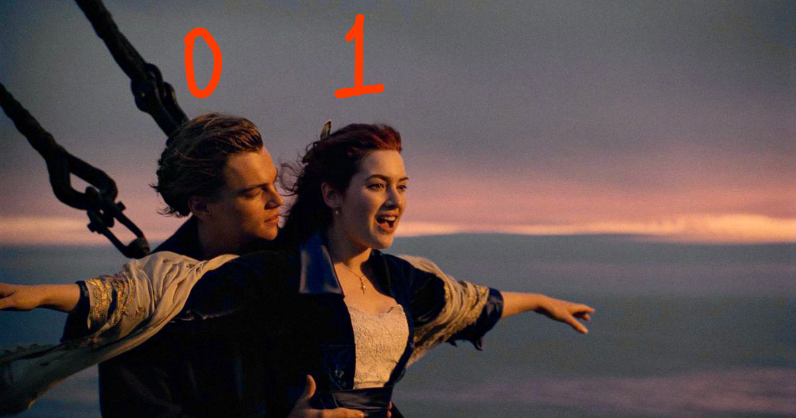

Blogs
Titanic Disaster
Kaggle
Feb 24, 2021

The sinking of the Titanic is one of the most infamous shipwrecks in history.
On April 15, 1912, during her maiden voyage, the widely considered “unsinkable” RMS Titanic sank after colliding with an iceberg. Unfortunately, there weren’t enough lifeboats for everyone onboard, resulting in the death of 1502 out of 2224 passengers and crew.
While there was some element of luck involved in surviving, it seems some groups of people were more likely to survive than others.
In this challenge, we were asked to build a predictive model that answers the question: “what sorts of people were more likely to survive?” using passenger data (ie name, age, gender, socio-economic class, etc).
My Contribution: :
- First anaylsed the data and realised missing values in Age, Cabin and Embarked columns.
- Tried deleting the rows having missing values in Age column but it dropped the score to 0.55502 because large number of rows had missing age values.
- Later instead of deleting the rows where age was missing, filled it with mean.
- After grouping the data of survived and not survived, it showed that Fare, Pclass and Parch columns had a high impact on survival chance as compared to others
- Deleted the Name and Ticket column as most of the data were unique and does not have any high impact.
- Replaced the missing values of cabin column with false and present values with true.
- Since Sex had only 2 values(Male and Female) and divied it into 2 columns(Sex_male and Sex_female).
- Same with the embarked. Now all the data's were in integer and boolean format with no missing values.
- Used the same model as given in the tutorial just changed the features need to be compared.
Technologies used:
- Python
- Jupyter Notebooks
- Pandas